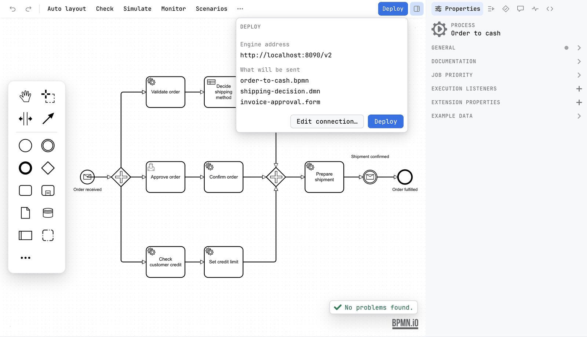

Guide / Test and run
Deployment
Deploy sends the diagram you are editing to the engine your project names, after one more click that shows exactly what will go where.
Deploy from the editor
- Open a diagram, a decision or a form.
- Press Deploy on the right of the toolbar. A popover opens under the button rather than deploying at once.
- Read the popover: which profile is in force, where it will go, and which files will be sent. Pick another profile if you need to, or press Edit connection… to set the address first.
- Press Deploy. A notification says where the file went, or what the engine answered.
Deploy sends the state of the canvas, including edits that have not reached the disk yet. It is on the toolbar of every editor: the BPMN, DMN and form editors have the same button, the primary action on the right, and the result is still a notification. When no engine is set, the button is there but disabled, and its tooltip says why: Add an engine to penstock.yaml to deploy. Under the Classic BPMN profile there is no deployment target, so the button is disabled. With an engine set, the tooltip names the address the file will go to, once one is known. See Engines.

What the popover tells you
| Profile | Which one is in force, and every other profile in the file, so a diagram can go to staging without changing what is in force. See Profiles. |
| Engine address | Where it will go, or Not set yet. |
| What will be sent | The files, by name, with a count for the rest. For a diagram that is the diagram and nothing else. |
| Edit connection… | Opens the Connection dialog for the profile you picked. |
| Deploy | Sends, to the profile you picked. |
The Connection dialog
It opens from Edit connection… in the popover, and it opens by itself the first time you deploy to a profile that has no engine address, or whose sign-in has no password or secret yet. Its title names the engine and the profile, for example Camunda 8 · prod.
| Field | What to enter |
|---|---|
| Engine address | The REST address of the engine. Required. http or https. Camunda 7, Operaton and CIB seven: for example http://localhost:8080/engine-rest. Camunda 8: the address of the REST API, for example http://localhost:8080 or http://localhost:8080/v2. |
| Sign in | Not needed, User and password, or OAuth client. |
| User, Password | For User and password. Sent as HTTP Basic. |
| Client id, Client secret, Token address, Audience | For OAuth client. Penstock uses the client credentials grant. The audience is optional. |
Opened from Edit connection… the dialog offers Save, which only saves, and Save and Deploy. Opened by a deploy, because nothing is set up yet, it offers Save and Deploy alone. If something is missing, the dialog says what is still needed, under the field, with a red outline once you have left it.
Where it is kept
- The address, the sign-in type, the user name, the client id, the token address and the audience go to
penstock.local.yaml, under the profile's name when a profile is in force. It stays on your machine. - The password or client secret goes to the secret store of your tool, once for each profile.
- When you open the dialog again, the field says Saved - type to replace. Leave it empty to keep the secret. Type to replace it. Set Sign in to Not needed and save to remove it.
What is set in penstock.yaml
Everything else about a deployment belongs to the project, not to the dialog. A profile can override any of it for another environment.
deployment:
url: http://localhost:8080/engine-rest
name: Order handling
tenantId: orders
changedOnly: true
profiles:
prod:
deployment:
url: https://bpm.example.com/engine-rest
auth:
type: oauth
clientId: penstock
tokenUrl: https://auth.example.com/oauth/token
hooks:
preDeploy: npm run verify-workers
postDeploy: ./notify-release.shname | Default Penstock deployment. Keep it the same between deployments, so the engine's duplicate check can match one to the next. |
source | Default penstock. |
tenantId | Empty means the default tenant. |
changedOnly | Leaves out what the engine already has, unchanged. On unless false. |
forTests | Marks an engine that test-case runs may deploy to and answer jobs on. See Scenarios. |
activationTime | An ISO 8601 timestamp. Empty means at once. Camunda 7 family. |
What is sent
One multipart/form-data POST with the file as a single part, named after the file. Its type is application/xml, or application/json for a form. Nothing else from the project goes with it. OAuth makes one more request first: the token request.
| Camunda 7, Operaton, CIB seven | /deployment/create is added to the address. Name, source, tenant and activation time go as form fields. changedOnly sets both enable-duplicate-filtering and deploy-changed-only. |
| Camunda 8 | /v2/deployments is added to the address. An address that already ends in /v2 works too. The file goes as resources, with tenantId beside it when set. |
Every tool uses the same addresses and settings, so an editor and a pipeline mean the same thing by deployment.url.
How the request is made
The request is made by the host process, not by the browser built into your tool, so no CORS configuration is needed on the engine. The address, the sign-in type, the user name, the client id, the token address and the audience go to penstock.local.yaml, under the profile's name when a profile is in force, which stays on this machine and is added to .gitignore. The password or client secret goes to the secret store of your tool, separately for each profile, and the dialog only says that one is stored rather than reading the value back out. A password: key in penstock.local.yaml is not read; a password comes from PENSTOCK_PASSWORD or from the secret store.
OAuth
Penstock first sends grant_type=client_credentials with the client id and secret to the token address, as a form. It reads access_token from the JSON answer and uses it as a bearer token on the deployment. The audience is sent only if you fill it in. If the token endpoint cannot be reached, answers with an error, or sends no access token, the deployment stops and the error says which. The token request times out after 15 seconds.
On the command line use auth.type: oauth and set the secret in PENSTOCK_CLIENT_SECRET. PENSTOCK_TOKEN, if set, is used as a bearer token instead. PENSTOCK_PASSWORD is the password for basic sign-in.
Hooks
preDeploy and postDeploy run around every deployment, from the editor and from the command line. They run in the project root and see PENSTOCK_FILES, PENSTOCK_ROOT, PENSTOCK_STAGE and PENSTOCK_PROFILE. A preDeploy that fails stops the deployment, and nothing is sent. postDeploy runs after a successful one. Where a tool has a notion of a trusted project, hooks run only in a trusted project. In a project that is not trusted, a configured preDeploy is not run, and the deployment stops rather than go ahead without it.
Deploy more than one file
Deploying sends the files of a project grouped by the target each folder asks for: files from folders whose penstock.yaml names another engine go to that engine. You can also send every diagram to one profile at once, after a confirmation.
Deploy many files in your tool
JetBrains
In the Penstock tool window: right-click a file or a process and press Deploy. It goes to that file's profile. Right-click a profile under Deployment to send every diagram to it. Hooks run only in a trusted project, and the password comes from the IDE password safe.
VS Code
In the Penstock view: right-click a file or a process row and press Deploy. Under Deployment, right-click a profile to send every diagram to it. Hooks run only in a trusted workspace, and credentials come from VS Code's secret storage.
Command line
$ penstock deploy . --dry-run
would send 3 file(s) to http://localhost:8080/v2/deployments as "order-example"
src/main/resources/approve-order.form
src/main/resources/order-process.bpmn
src/main/resources/shipping-method.dmn--dry-runsays where, and sends nothing. Try it first in a new pipeline.--waitasks the engine until it shows the definitions.- Secrets come from
PENSTOCK_PASSWORD,PENSTOCK_CLIENT_SECRETandPENSTOCK_TOKEN. AnyPENSTOCK_*variable that matches a setting overrides it for the run.
See Every command.
Feedback and errors
| Success | Deployed order-process.bpmn as order-process v3 on http://localhost:8080 |
| The engine said no | One line for each file it refused and why, rather than a list of element errors. The editor's message offers Edit connection when the engine answered 401 or 403; the command line says what to set. |
| Not signed in | An answer of 401 or 403 means the address or the credentials are wrong. In a terminal, set deployment.auth in penstock.local.yaml, or PENSTOCK_PASSWORD, PENSTOCK_CLIENT_SECRET or PENSTOCK_TOKEN. |
| Not reachable | Could not reach the engine at <url>. |
| No address | The message says so and points at deployment.url or the Connection dialog. |
| preDeploy failed | The preDeploy hook failed, nothing was sent. The hook's output follows. |
| Not confirmed | With --wait: The engine took the deployment but did not show its definitions in time. Penstock waited 30 seconds per definition. |
| Timeouts | 10 seconds to connect, 30 seconds for the deployment request. |
What you see
- A popover under the Deploy button, then a notification: Deployed order-process.bpmn as order-process v3 on http://localhost:8080.
- In the engine's own web application, the process shows a new version, or the same one when nothing changed and
changedOnlyis on.
Common problems
- Deploy is greyed out.
- The engine is Classic, or not set. Hover the button: it says Add an engine to penstock.yaml to deploy. Set
engineinpenstock.yaml. See Engines. - Every deploy is a new version.
- The engine's duplicate check matches by name. Keep
deployment.namethe same, and leavechangedOnlyon. - The editor says 404 or the wrong path on Camunda 8.
- Use the address of the REST API. Penstock adds
/v2/deployments. If your address already ends in/v2, that is fine too. - The engine has a private certificate.
- Penstock does not skip certificate checks. Trust the certificate in the runtime of your tool. See the troubleshooting page of your tool.
- A wrong password is saved.
- Press Deploy, then Edit connection…, type the right one and save.
- Deploy is disabled in a decision or a form.
- No engine is set for the project. Set
engineinpenstock.yaml. - Nothing is deployed when I press Deploy.
- It opens the popover on purpose. Press Deploy in the popover to send.